先说明：本文金额是我截至录制时的个人账本，不是所有人的统一成本。汇率按录制时约 1 美元兑 6.72 元人民币粗算；服务价格、汇率、转运次数、申请条件和信用卡权益都会变化。
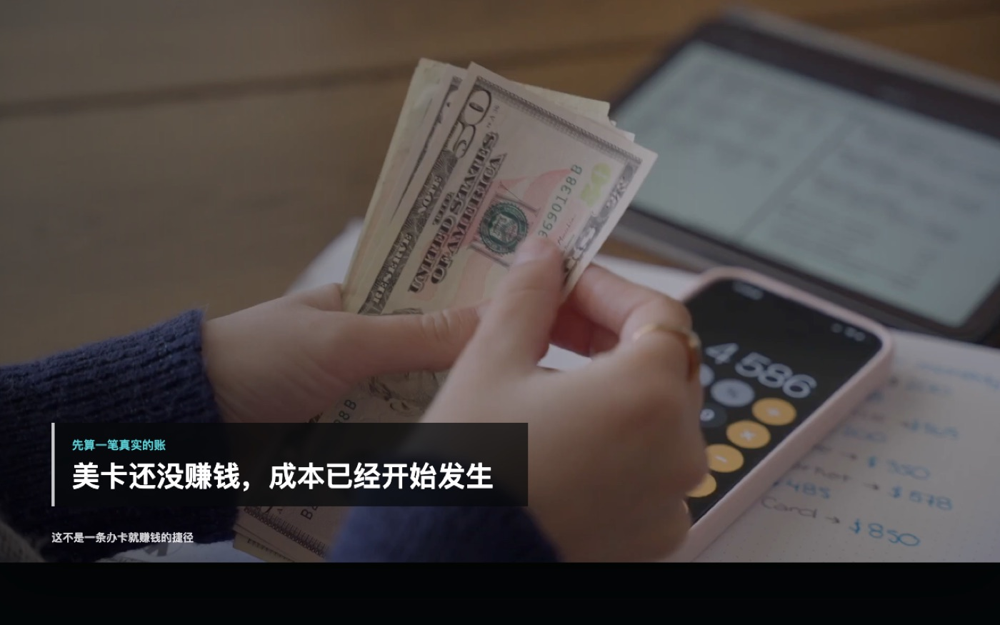
我现在没有赚钱，为什么还要继续
很多人研究美国信用卡，第一眼看到的都是高返现、积分和开卡奖励。可我把自己到目前为止花的钱全部算了一遍，结论是：我现在不但没有赚到钱，反而还在持续付成本。
那我为什么还要申请 ITIN，再从零建立美国信用记录？这篇文章就把好处、成本和回本难度放在同一张账本里看，不把未来可能获得的权益提前算成利润。
先把 ITIN 的用途说准确
ITIN 是 IRS 发放的个人纳税人识别号码，官方用途是处理美国联邦税务。它不是美国身份，不是工作许可，也不能代替 SSN。IRS 还明确说明，不会只因为一个人想开银行或投资账户、做电商或者开办企业，就单独发放 ITIN。
因此，申请之前必须确认自己存在符合规定的联邦税务用途，或者满足 Form W-7 规定的例外条件。不能为了申请信用卡而虚构税务理由。
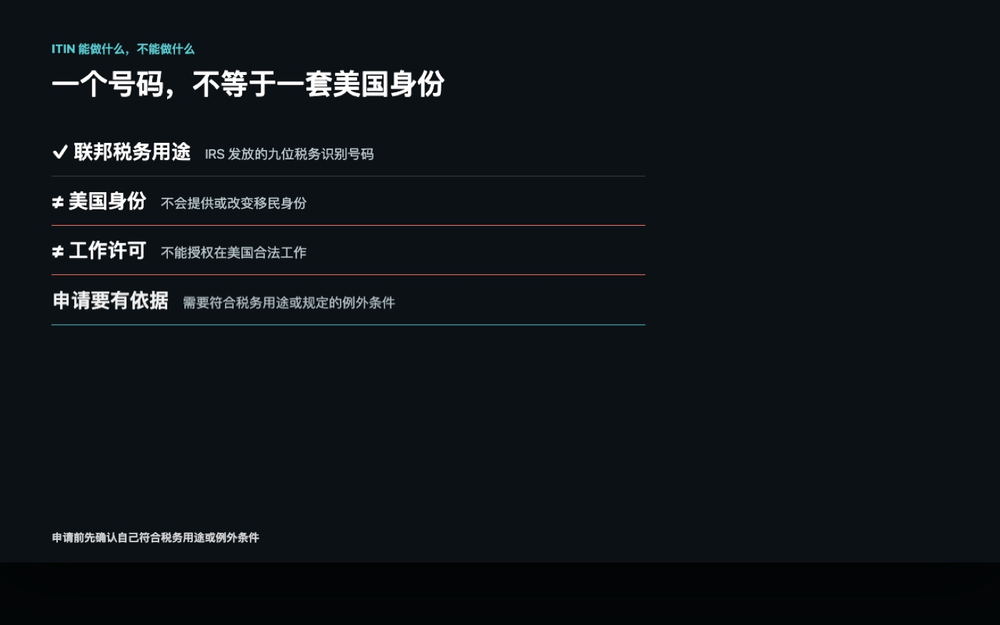
ITIN 为什么会和美国信用卡发生关系
一些金融机构的申请系统可以接受 ITIN 作为身份识别资料的一部分。也就是说，当一个人已经因为合规的税务原因取得 ITIN 后，它可能帮助他进入部分美国金融机构的申请流程。
但有 ITIN 不代表信用卡一定批准。银行仍然会审核地址、收入、身份资料、信用历史和整体风险，具体要求也会因机构和产品而变化。
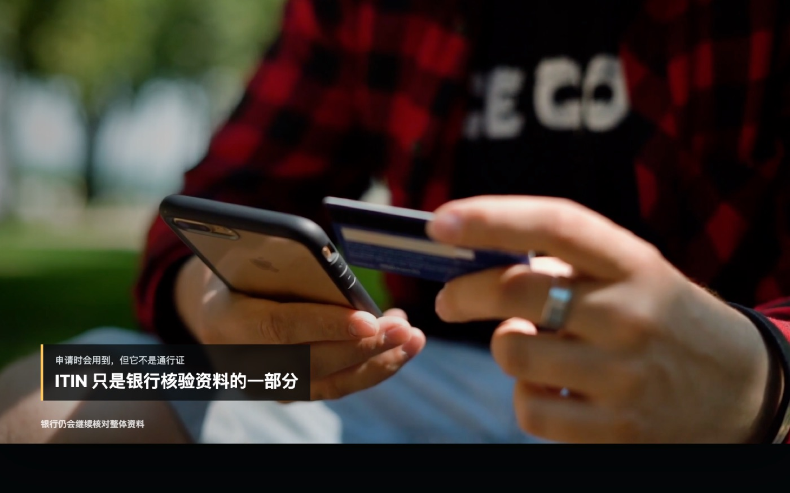
第一阶段最大的好处：开始建立信用记录
对我来说，第一阶段最大的好处并不是返现，而是开始建立美国信用记录。账户持续上报、按时还款并保持稳定使用以后，信用历史才会慢慢变长。
未来等信用档案成熟，我才有机会根据自己的需求考虑返现卡、旅行卡、酒店卡，或者带开卡奖励的产品。第一张卡更像入口，不是利润最高的那一张，也不保证未来一定获得其他产品。
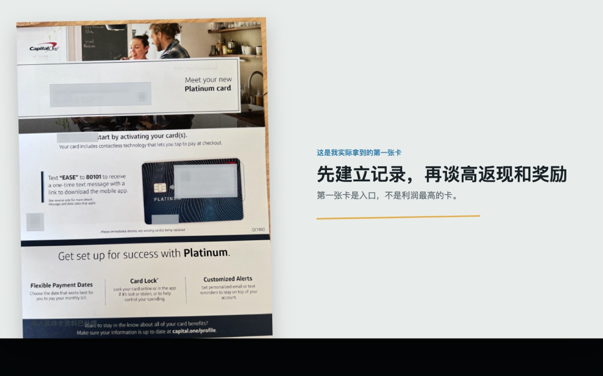
为什么只看返现，很容易算错账
如果只是听到美国信用卡返现高，就认为办下来马上能赚钱，很容易忽略维护成本。普通返现通常只是消费金额的一小部分，而手机号、个人使用的网络服务和信件转运可能是持续发生的固定或半固定成本。
消费不够高时，返现可能连这些费用都覆盖不了。开卡奖励确实可能缩短回本时间，但通常要求在规定时间内完成符合条件的真实消费；为了奖励增加不必要消费，账面上的奖励就不一定是真正收益。
第一项成本：我的 ITIN 办理服务费
我申请 ITIN 实际花了 780 元人民币。这不是 IRS 统一收取的申请费，而是我选择办理服务产生的个人成本。
IRS 提供邮寄申请、预约 Taxpayer Assistance Center，以及通过 Acceptance Agent 或 Certifying Acceptance Agent 办理等路径。TAC 是免费服务，部分提供 ITIN 服务的 VITA 站点也可免费协助；部分代理则可能收费，价格由服务提供方决定。
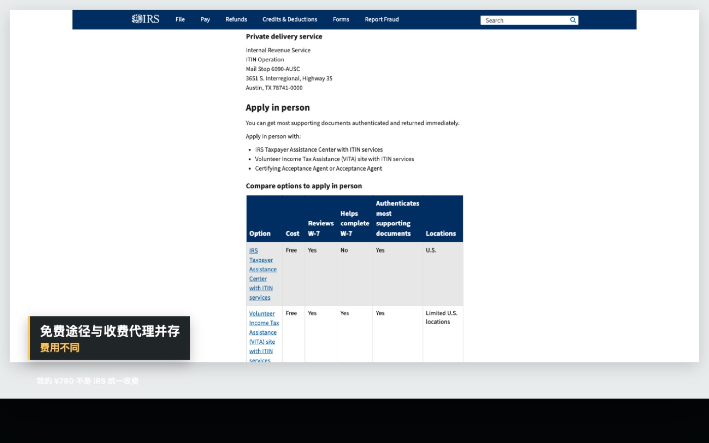
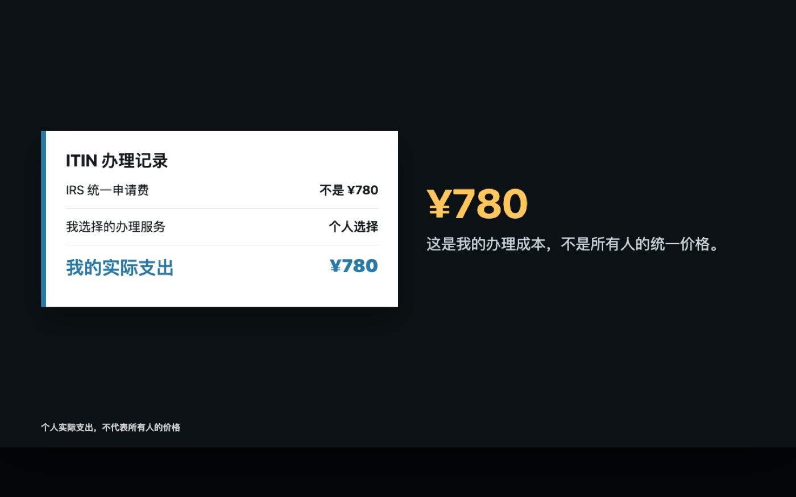
第二项成本：美国地址和信件转运
我的美国地址由朋友免费提供，所以地址本身在这份账里是零成本，但这并不是所有人都能复制的条件。地址必须真实、可使用，并符合银行要求；不能提交虚假或无权使用的地址。
真正产生费用的是信件转运，每次大约 200 元。银行可能寄审核信、补件信或者实体卡，具体次数无法提前完全确定。因此我把转运写成变量：一年零次、两次和四次，最后的成本会完全不同。
第三项成本：持续性的服务费用
我的美国手机号每月 6 美元，个人使用的网络服务每月 5 美元，两项合计每月 11 美元。按照本期采用的 1 美元兑 6.72 元人民币粗算，一年约 887 元人民币。
这两项是我个人当前的账户维护开销，不是信用卡申请的统一必备条件。网络环境方面，重点是保持稳定、干净、长期一致的使用习惯，避免频繁切换地区、设备和 IP，减少账户安全验证和风控误判；这不意味着 VPN、住宅 IP 或任何特定服务是申请必需品，更不是绕过审核的方法。
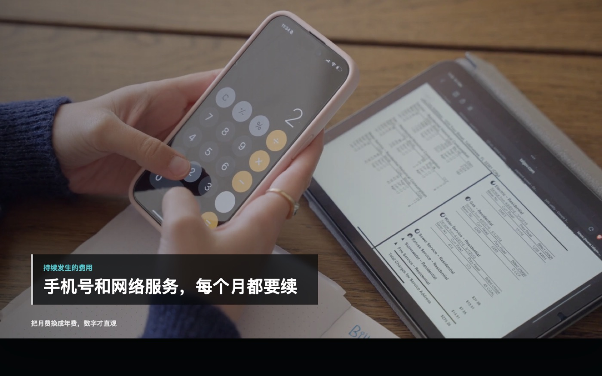
第四项成本：跨境入金和还款损耗
目前我实际使用的资金路径可以做到接近零损耗，所以这份账暂时把这一项按零计算。但这同样只是个人情况，不代表所有转账、换汇或还款方式都免费。
每个人都应按照自己的实际汇率、转账费、入金费和到账金额计算。至于收入端，我现在的 Capital One Platinum 仍在建信阶段，没有返现和开卡奖励，所以截至录制时，收益是零，成本是真实发生的。
我的第一年成本账
把目前可以确定的金额放在一起：
| 项目 | 计算方式 | 第一年成本 |
|---|---|---|
| ITIN 办理服务 | 个人实际支出 | ¥780 |
| 美国手机号 | $6 × 12 × 6.72 | 约 ¥484 |
| 个人网络服务 | $5 × 12 × 6.72 | 约 ¥403 |
| 地址 | 朋友提供 | ¥0 |
| 跨境入金损耗 | 本人当前路径 | 暂按 ¥0 |
| 基础成本 | 不含信件转运 | 约 ¥1,667 |
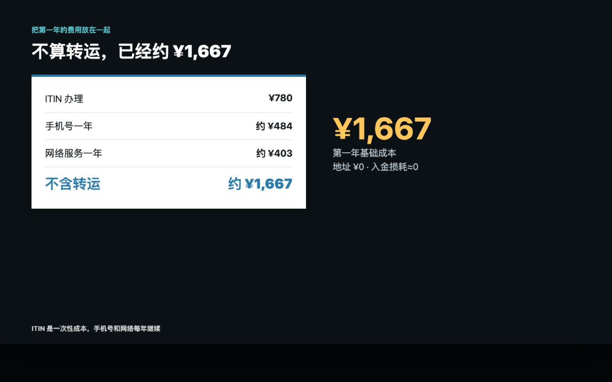
把信件转运次数加入账本
- 一年转运 0 次：约 1,667 元；
- 一年转运 2 次：约 2,067 元；
- 一年转运 4 次：约 2,467 元。
第二年不再重复计算 ITIN 办理服务费，固定成本会下降，但手机号、个人网络服务和可能发生的转运仍然存在。
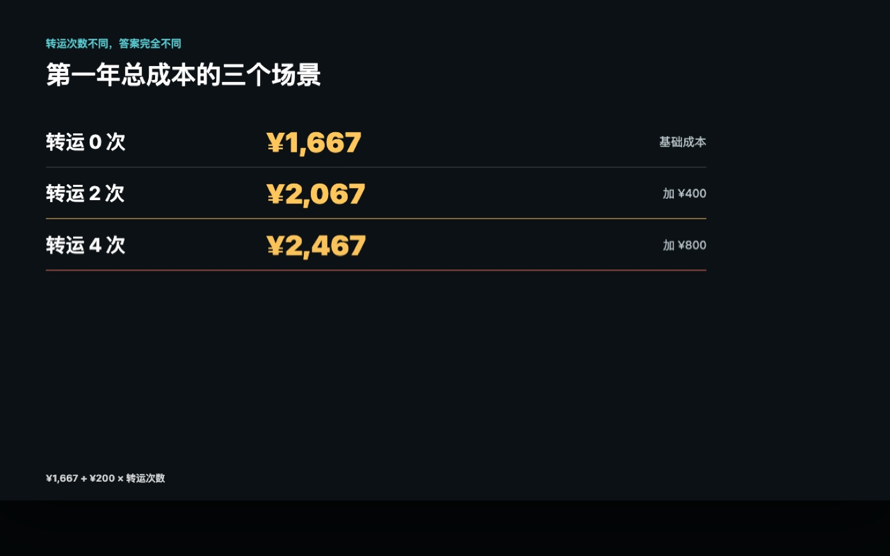
普通返现需要多少消费才能回本
以第一年转运两次、总成本 2,067 元为例：
- 如果平均返现为 2%，需要约 103,350 元符合返现条件的消费才能覆盖成本；
- 如果平均返现为 3%，需要约 68,900 元符合返现条件的消费才能覆盖成本。
计算方式只是“总成本 ÷ 返现率”。它没有考虑年费、返现上限、排除交易、兑换价值变化、汇率变化，也不能把退款、现金类交易或不符合奖励规则的消费算进去。
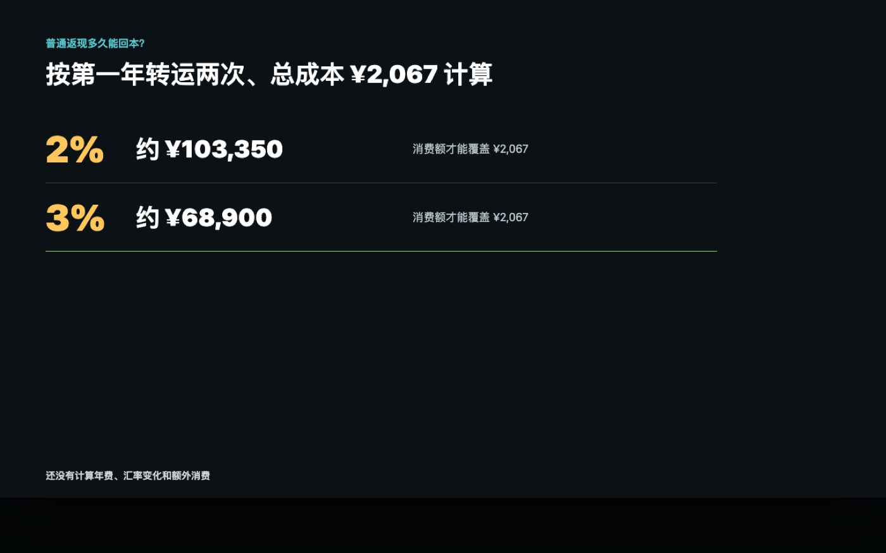
开卡奖励可能更快回本，但不是免费送钱
真正可能缩短回本时间的是开卡奖励，但它一般要求持卡人在规定时间内完成指定金额、并且符合条款的消费。最理想的情况，是把原本就会发生且能够全额偿还的消费放到新卡上，而不是为了拿奖励临时购买不需要的东西。
如果自然消费达不到要求，这个奖励看起来再高，也不一定适合。申请前还要核对年费、奖励资格、消费期限和哪些交易不计入要求。
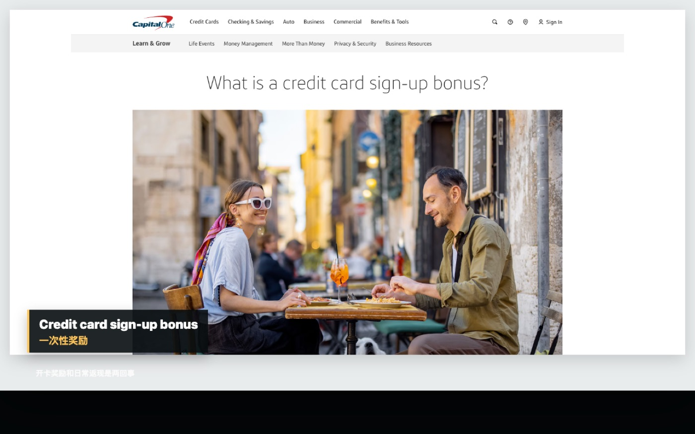
什么人更适合搭建这套体系
我认为更适合开始的人，通常具备这些条件：
- 有合规取得 ITIN 的税务用途，并愿意长期维护账户；
- 有真实的美元、跨境或美国消费需求；
- 能够在自己负担范围内消费，并按时全额还款；
- 愿意接受信用历史需要时间慢慢建立；
- 已经算清自己的手机号、地址、转运、年费和资金路径成本。
如果消费很少，只想靠第一张卡迅速赚钱，没有稳定还款渠道，或者会为了完成奖励增加消费，那么这套体系可能暂时不适合。信用卡本质上仍是借款工具；如果卡片提供免息期，通常也需要按期全额还清符合条件的消费，才能避免相应利息，具体以持卡人协议为准。
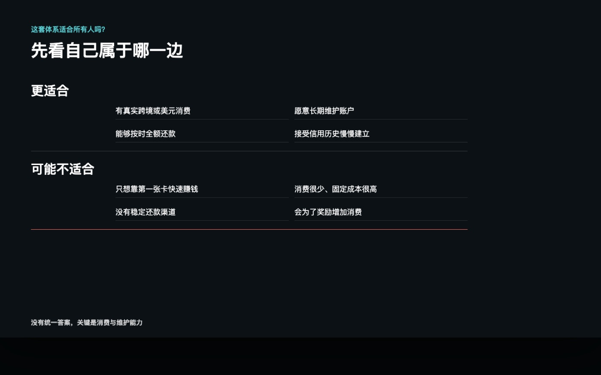
我为什么仍然愿意继续
我把这笔钱理解成建立信用体系的启动和维护成本，而不是一项保证赚钱的投资。现阶段我得到的是一张开始进入信用档案的账户，以及未来拥有更多选择的可能性。
至于最后能不能回本，要等以后真正取得返现、开卡奖励或其他可量化权益，再结合实际消费、年费和持续成本回答。现在把未来权益记成已经赚到的钱，会让这张账失真。
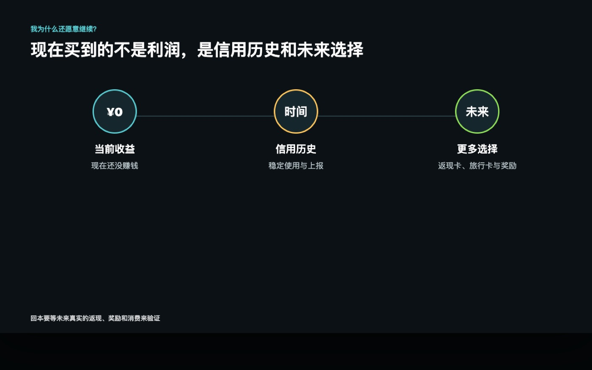
总结
美国信用卡可以产生返现、积分和奖励，但绝对不是办下来就赚钱。开始之前，至少要把 ITIN 办理、手机号、地址、信件转运、年费、换汇与还款损耗全部列进账本，再用自己的自然消费计算回本难度。
免责声明：本文仅为 Evan 的个人经验、实际成本记录和信息整理，不构成金融、税务或法律建议，也不保证 ITIN、信用卡申请、信用记录、返现、开卡奖励或回本结果。税务资格和金融产品规则可能变化，请以 IRS、发卡机构及本人账户条款为准。
消费提醒：不要为了返现或奖励增加无法按时全额偿还的消费。奖励价值可能被利息、年费、手续费、汇率损耗或非必要支出抵消。
前后篇
上一篇：Capital One 不让我查信用分？ITIN 用户先看懂这件事
下一篇：这张 Capital One 回到国内以后，到底能不能用？